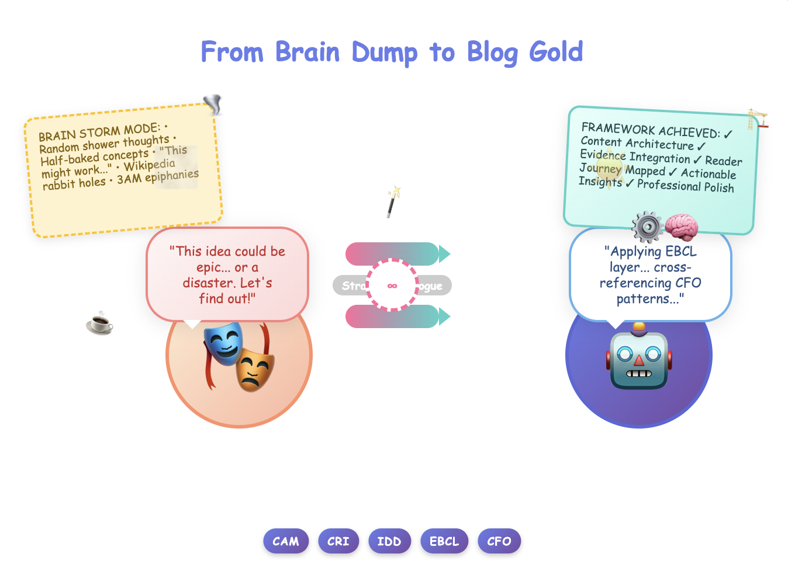

How to Engineer Compelling Blogs Through Conversational AI
Transforming scattered thoughts into structured, engaging content through strategic dialogue
A Quick Meta-Confession: This entire blog is essentially me reverse-engineering my own conversation with a generative LLM to figure out why our content collaboration worked so well. Think of it as relationship therapy, but for human-AI creative partnerships. After countless iterations and exchanges, I realized we'd accidentally stumbled into a systematic approach that turns scattered 2 AM thoughts into polished, professional content. So here's my attempt at bottling that lightning, because apparently, the best way to understand how to prompt an AI is to ask that same AI to help you analyze how you've been prompting it all along. The technique names? 100% bespoke. No research. No PhD. Meta? Absolutely. Effective? You're about to find out.
The art of creating compelling blog content has evolved dramatically. It's no longer about sitting down with a blank page and hoping for inspiration. Today's most effective content creators use what I call "Strategic Prompting" – a methodical approach to guiding AI through conversational refinement until you achieve content that resonates, engages, and converts.
After analyzing dozens of successful content creation sessions, I've identified five core techniques that consistently produce professional-grade blogs. These aren't just prompting tips; they're strategic frameworks for thinking about content creation as an iterative dialogue.

The Foundation: Content Architecture Mapping (CAM)
Before you write a single prompt, you need to establish your Content Architecture Map. This technique involves breaking down your subject into its core components and identifying the relationships between them.
The CAM Process:
- Subject Decomposition: Break your main topic into 3-7 key subtopics
- Audience Journey Mapping: Identify where your readers are emotionally and intellectually when they encounter each section
- Connection Point Identification: Find the bridges that link your subtopics naturally
- Value Anchor Setting: Determine what specific value each section provides
Example Application: Instead of prompting: "Write about digital marketing trends"
Use CAM to prompt: "Help me create a blog that takes marketing managers through the journey from feeling overwhelmed by new AI tools to confidently implementing them in their quarterly strategy. Structure it around three key decision points: tool evaluation, team training, and ROI measurement."
Technique 1: Contextual Reality Injection (CRI)
This technique involves embedding real-world scenarios and constraints into your prompts to generate content that feels authentic and immediately applicable.
The CRI Formula: - Persona Specificity: Define exactly who is reading and why - Situational Constraints: Add real-world limitations (budget, time, resources) - Emotional State Recognition: Acknowledge the reader's current feelings about the topic - Environmental Context: Include industry, company size, or market conditions
Poor Prompt Example: "Write about cybersecurity best practices"
CRI-Enhanced Prompt: "You're writing for a mid-level IT manager at a 200-person financial services firm who just had their first security audit. They're feeling pressure from the C-suite to implement better practices but have a limited budget and a team that's already stretched thin. Walk them through three immediately actionable steps that don't require additional software purchases."
Technique 2: Iterative Depth Drilling (IDD)
Most people stop at their first AI output. IDD involves systematically deepening each section through follow-up prompts that add layers of nuance, examples, and practical application.
The IDD Sequence: 1. Initial Framework Generation: Get the basic structure and key points 2. Example Amplification: Add specific, detailed examples to each major point 3. Counterpoint Integration: Include potential objections or alternative viewpoints 4. Practical Application Layer: Add actionable steps or frameworks 5. Human Touch Injection: Insert personal anecdotes, humor, or emotional resonance
Example IDD Progression:
Round 1: "Create an outline for a blog about remote team management"
Round 2: "For each of those five points, add a specific example from a company that successfully implemented that strategy"
Round 3: "Now add potential objections a skeptical middle manager might have about each strategy, and how to address them"
Round 4: "Create a simple framework or checklist for each section that readers can implement immediately"
Round 5: "Add brief personal anecdotes or observational humor that makes each section more relatable"
Technique 3: Evidence-Based Credibility Layering (EBCL)
This technique involves strategically requesting specific types of supporting evidence to build credibility and trust throughout your content.
The EBCL Components: - Statistical Anchoring: Request specific data points that support key claims - Authority Quotation: Include quotes from recognized experts or thought leaders - Case Study Integration: Add real-world examples of success or failure - Trend Contextualization: Place your topic within broader industry or societal trends
EBCL Prompt Structure: "For each major claim in this blog, provide specific data or research that supports it. If you can't find exact statistics, suggest what type of data would be most convincing and where someone might find it. Also, identify 2-3 authoritative figures whose quotes would add credibility to these points."
Technique 4: Conversational Flow Optimization (CFO)
This technique focuses on creating natural, engaging dialogue between the content and reader, avoiding the formal, academic tone that often makes blogs feel impersonal.
CFO Elements: - Question Integration: Strategic use of rhetorical questions to engage readers - Transition Smoothness: Creating natural bridges between sections - Tone Consistency: Maintaining a conversational but professional voice - Reader Assumption Management: Acknowledging what readers might be thinking
CFO Prompt Example: "Rewrite this section to sound like a conversation between two marketing professionals over coffee. Include questions that anticipate what the reader might be wondering, and use transitions that feel natural rather than formal. Avoid academic language but maintain professional credibility."
Technique 5: Multi-Modal Content Enhancement (MMCE)
This technique involves planning for visual elements, interactive components, and different content formats within your blog structure.
MMCE Planning: - Visual Element Identification: Determine where images, diagrams, or infographics would enhance understanding - Interactive Component Integration: Plan for checklists, frameworks, or tools readers can use - Format Variation: Mix prose with lists, quotes, case studies, and call-out boxes - Engagement Trigger Placement: Strategic positioning of elements that encourage sharing or commenting
MMCE Prompt Structure: "Identify 3-4 places in this blog where visual elements would significantly enhance understanding. Describe what type of visual would work best and why. Also, suggest 2-3 interactive elements (checklists, frameworks, etc.) that readers could screenshot or bookmark for later use."
The Strategic Refinement Protocol
Once you have your initial content, use this refinement sequence to elevate it from good to exceptional:
Phase 1: Content Audit Prompt: "Review this blog for sections that sound too generic or could apply to any company in any industry. Identify 3-4 places where we could add more specific, industry-relevant examples or insights."
Phase 2: Voice Consistency Check Prompt: "Read through this entire piece and identify any sentences or paragraphs that don't match the conversational, professional tone we've established. Suggest revisions that maintain credibility while feeling more human."
Phase 3: Value Density Assessment Prompt: "Evaluate each paragraph for its practical value to the reader. Are there any sections that feel like filler or that don't advance the reader's understanding? Suggest either removal or enhancement for any weak areas."
Phase 4: Engagement Optimization Prompt: "Add 2-3 strategic questions throughout this piece that would encourage readers to pause and think about their own situation. Also, identify one place where a brief, relevant anecdote would make the content more memorable."
Advanced Techniques: The Professional Edge
Regulatory Awareness Integration: When relevant, prompt for current regulations, compliance requirements, or industry standards that affect your topic.
Competitive Context Positioning: Ask for analysis of how your perspective differs from common approaches in your industry.
Future-State Visualization: Include prompts that help readers envision the outcomes of implementing your suggestions.
Objection Pre-emption: Systematically address potential concerns or criticisms before readers think of them.
Putting It All Together: The Complete Framework
Here's how to apply all five techniques in a complete content creation session:
- Start with CAM: Map your content architecture before writing any prompts
- Apply CRI: Inject real-world context into your initial prompts
- Execute IDD: Deepen each section through iterative questioning
- Layer EBCL: Add credibility through evidence and authority
- Optimize with CFO: Ensure conversational flow and engagement
- Enhance via MMCE: Plan visual and interactive elements
- Refine with SRP: Use the Strategic Refinement Protocol to polish
The Results You Can Expect
When you apply this Strategic Prompting Framework consistently, you'll notice:
- Increased Engagement: Content feels more personal and relevant to readers
- Enhanced Credibility: Proper evidence and examples build trust
- Improved Actionability: Readers know exactly what to do next
- Better Conversion: Content naturally guides readers toward desired actions
- Reduced Revision Time: Higher-quality first drafts require fewer edits
Your Next Steps
Choose one blog topic you've been meaning to write about. Apply just the Content Architecture Mapping technique first. Spend 10 minutes breaking down your topic using the CAM process before you write any prompts.
Then try one round of Contextual Reality Injection. Notice how much more specific and engaging your prompts become when you include real-world context.
The difference between good content and great content often comes down to the quality of the questions you ask. These techniques ensure you're asking the right questions at the right time.
Remember: AI is only as good as the conversation you have with it. Make that conversation strategic, and your content will reflect that strategic thinking.
Have you tried any of these prompting techniques in your own content creation? What results did you see? Share your experience in the comments – I'd love to hear how these frameworks work in different industries and contexts.